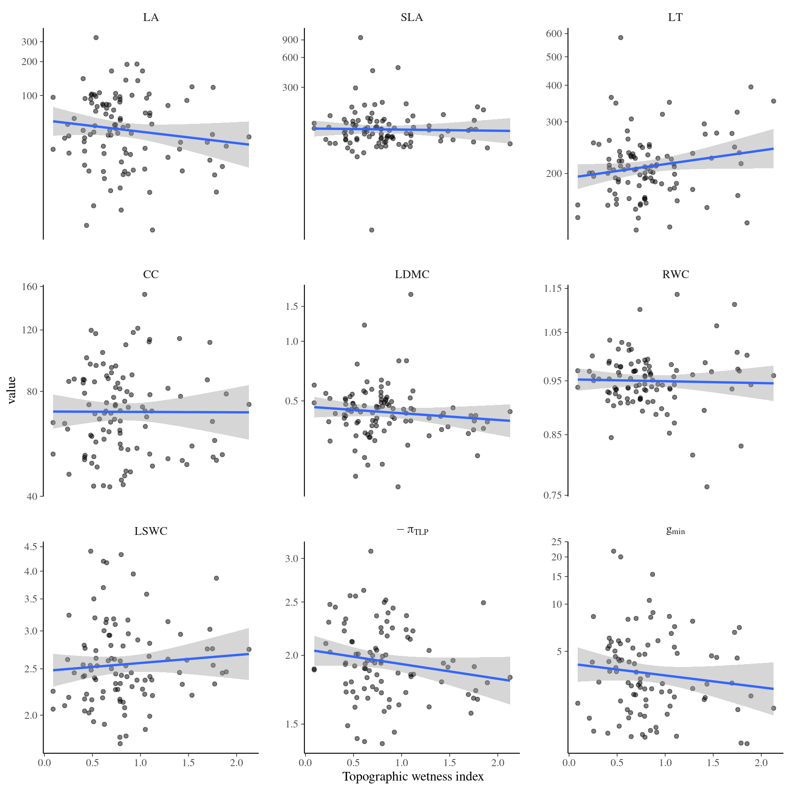

This book is in Open Review. I want your feedback to make the book better for you and other readers. To add your annotation, select some text and then click the on the pop-up menu. To see the annotations of others, click the in the upper right hand corner of the page
Chapter 6 Individual variation

Figure 6.1: Per species sampling effort.
Figure 6.2: Sampled individuals.

Figure 6.3: Traits distributions when testing for individual variation.

Figure 6.4: Traits variances when testing for individual variation.

Figure 6.5: Traits distributions when testing for individual variation and sampling date.

Figure 6.6: Traits distributions when testing for individual variation and diameter.

Figure 6.7: Traits distributions when testing for individual variation and topography.